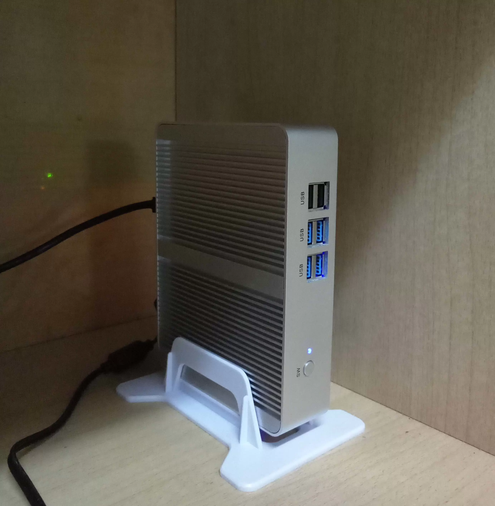
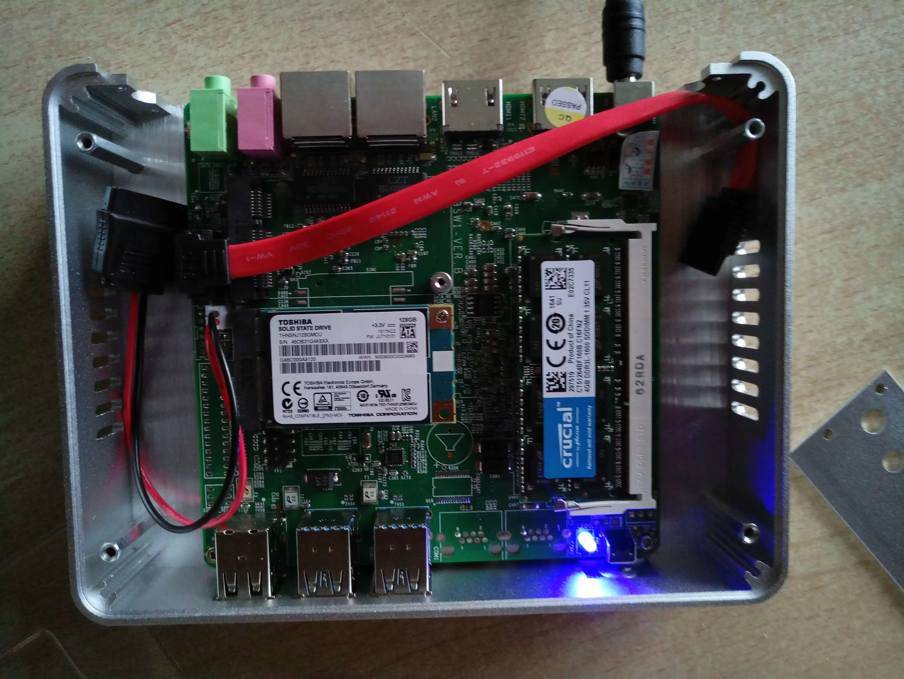
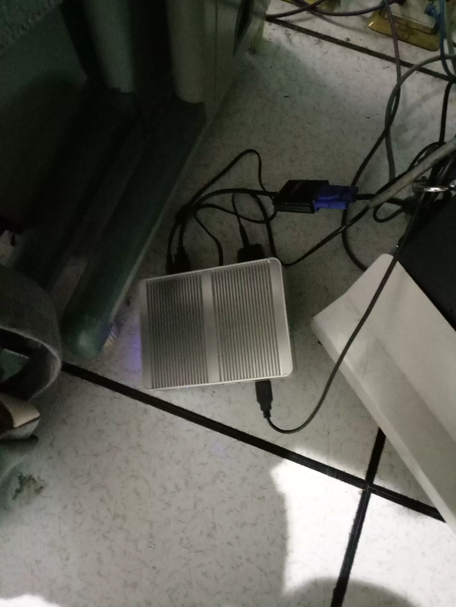
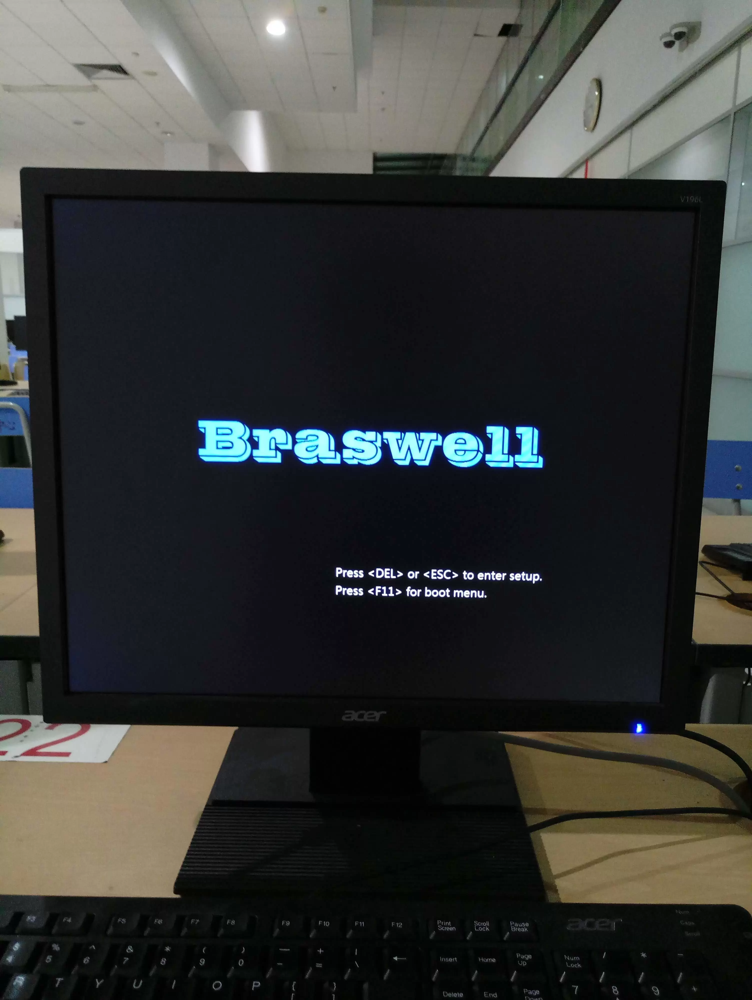
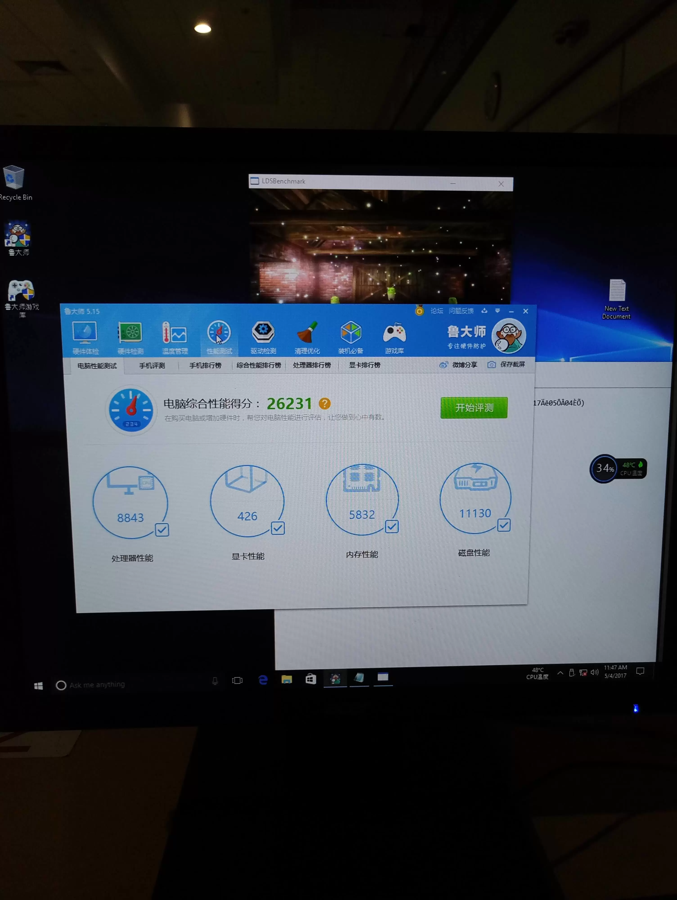
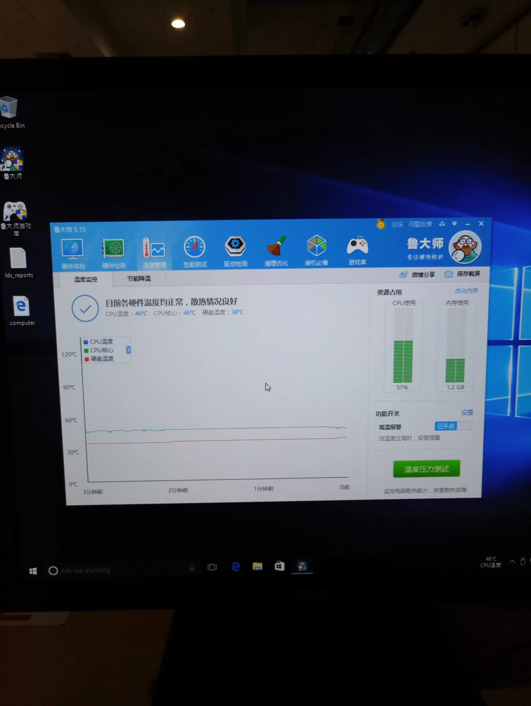

占美 N3050 迷你主机入手体验
十天前入手这台迷你主机，现在写写体验。
价格篇
我一开始是打算买个树莓派用来做下载机的，但是性能不高。搜遍了某宝发现有迷你主机这种东西，Intel NUC 还不错，对我来说太贵了。然后我在各个论坛上找这一类的推荐，衡量之后，入了占美的机器。价格、性能恰好平衡，评价也不错。我买的是最便宜的准系统，自购内存和硬盘，费用清单如下：
| 项目 | 费用 |
|---|---|
| 占美 N3050 准系统 | 409 RMB |
| 镁光 DDR3L 1600 4G 内存 | 169 RMB |
| 东芝 MSATA 128G SSD | 356.11 RMB |
| HDMI 转 VGA 线 | 13.8 RMB |
| 绿联千兆6类网线 0.5m | 5.8 RMB |
| 合计 | 953.71 RMB |
总共不到 1K，这个价位还是可以接受的。唯一有点不满意的大概是外观吧。上一张它工作时候的图片：

配置篇
包裹都到齐之后，由于没有显示器和外接键盘，无法安装系统，我偷偷到机房借用了机房电脑的显示器和键盘。一开始也考虑到这个问题，所以提前买了 HDMI 到 VGA 的转接线，整个过程还是很顺利的，花了一个下午时间，组装机器，到机房安装 Windows，用鲁大师跑了分测了硬件信息，最后装上 CentOS，配置网络连接，回寝室就可以使用 SSH 连接，正常使用了。



CPU
我是想买 N3150 这个 U 的板子的，两者都是5代 U，但N3050 是双核双线程，N3150 是四核四线程。店主两个 U 都写了，无奈下单的时候太激动，没问清楚。
N3050 双核，基频 1.60 GHz，睿频 2.16 GHz。采用 14 纳米工艺，非常省电，发热低。最大支持 8G DDR3L-1600 RAM，核显就很渣了，用鲁大师测试的时候动画根本动不了。。不过对我来说显卡并没有什么用处。
目前，在 CentOS 下，日常使用是感受不到卡顿的。
主板
主板支持 UEFI 启动，外部接口信息如下：
| 接口 | 数量 |
|---|---|
| 千兆网口 | 2 |
| HDMI | 2 |
| USB 2.0（前面板） | 2 |
| USB 3.0（前面板） | 4 |
| SPK 耳机接口 | 1 |
| MIC 麦克风 | 1 |
内部接口信息如下：
| 接口 | 数量 |
|---|---|
| 内存插槽 | 1 |
| Mini PCIe（全高） | 1 |
| MSATA | 1 |
| SATA | 1 |
内存和硬盘
目前来看，2G 内存其实也够了，最大的瓶颈在 CPU 上，内存再多也没用，实际占用很低，大部分是拿来缓存文件。
如果经常下载东西，固态硬盘还是挺需要的。因为虽然有一个 SATA 接口但是内部空间已经非常狭小，勉强能放下一个 2.5 寸 的机械硬盘，但是考虑到散热和振动，我最终选择买一个大一点的固态硬盘，放弃这个 SATA 接口。
网卡
我选的这个是双网口的，都是千兆口。同时还支持一个 Mini PCIe 的无线网卡。因为已经有了一台路由器，暂时不需要无线网卡。
性能篇
跑分
第一次装系统的时候特地安装了 Windows 想用鲁大师跑个分，虽然不一定靠谱，但是店家以及许多测评都用了，也好有个对比。这个分数还行吧，只是测试显卡的过程中，一直卡着，耗费了很长时间。

功耗
这机子比较好的一点是没有风扇，加上 SSD，使用的时候可以做到完全静音。N3050 其实也不需要担心散热问题，同时全铝机身对散热有帮助。下图是鲁大师温度压力测试的结果：

测试过程中，温度在 46 度左右。日常使用中，连续开机好几天，机身温度都保持稳定，手摸上去只是温热的感觉。
稳定性
目前这台机子已经 24 小时连续开机好几天，没有遇到意外关机的状况，运行过程中非常稳定。
用途篇
下载机
这是最大的用途。用笔记本挂机下载东西，我挺心疼的。有了这个机子终于可以放心大胆地下载东西了。装上 aria2，24 小时挂机下种子别提多舒服。跑满带宽自然不在话下。
samba 文件服务器
装上 samba 把机子的文件共享给其他设备。在路由器上配置好端口转发，记下路由器在校园网内的 IP，只要连上校园网，就能连上 samba 服务器。下载电影后直接在其他设备上观看。
如果在我的路由器的局域网下，还可以作为文件中转站。macOS 下读写 NTFS 不方便，那么可以将移动硬盘 mount 到小服务器上，然后通过 samba，在 macOS 上就可以自由操作了。只是目前这个路由器太渣，速度才 15 MB/s 左右。
测试机
平常如果想在 VPS 上部署点什么，就可以先在小服务器上练练手。我两个地方都装的 CentOS，维护起来方便点。如果哪台机器上出现了问题，另一台机器还可以作为对照组，方便排查。
私有云
外接 RAID 磁盘阵列，可以做一个私有云服务器。但是目前考虑到成本问题，以及在用的 Google drive 挺好的，就没搞了。